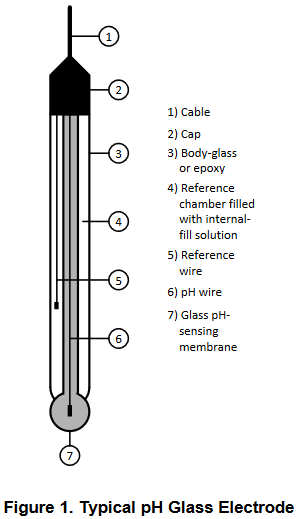
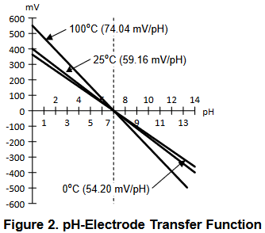
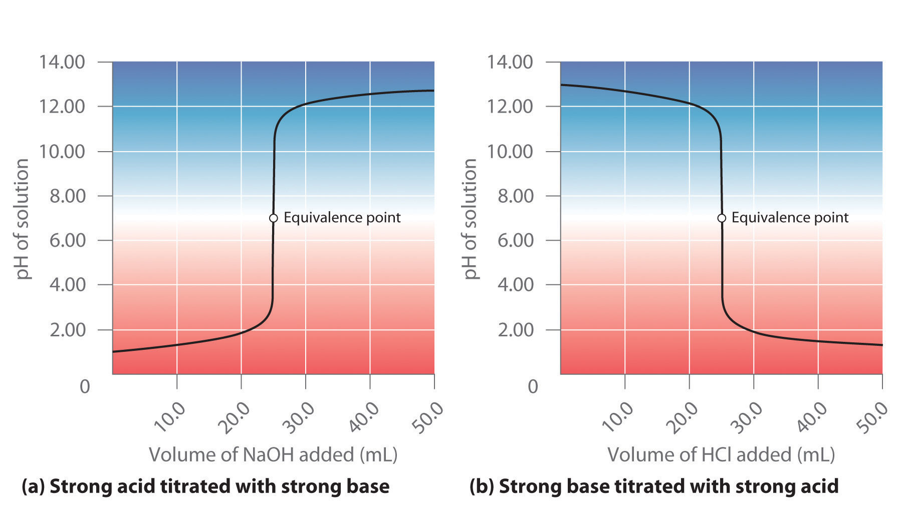

A pH electrode measures hydrogen ion(H+) activity and produces an electrical potential or voltage. The modern pH electrode is a combination electrode composed of two main parts: a glass electrode and a reference electrode. pH is determinedes sentially by measuring the voltage difference between these two electrodes. At the tip of the electrodeis the thin membrane that is a specific type of glass that is capable of ion exchange. It is this element that senses the hydrogen ion concentration of the test solution. The reference electrode potentialis constantandis produced by the reference electrode internal element in contact with the reference-fill solution that is kept at a pH of seven.
The pH electrode is a passive sensor, which means no excitati on source (voltage or current) is required. Because the electrode's output can swing above and below the reference point, it is classified as a bipolar sensor. It produces a voltage output that is linearly dependent up on the pH of the solution being measured.
The source impedance of a pH electrode is very high because the thin glass bulb has a large resistance that is typically in the range of 10MΩ to 1000MΩ. This means that the electrode can only be monitored by a high-impedance measuring device.
where:
• pH(X) = pH of unkown solution(X)
• pH(S) = pH of standard solution = 7
• Es = Electric potential at reference or standard electrode
• Ex = Electric potential at pH-measuring electrode
• F is the Faraday constant = 9.9485309*10^4 C/mol
• R is the universal gas constant = 8.314510 J/(K*mol)
• T is the temperature in Kelvin
The transfer function in Figure2 and Figure3 shows that as the pH of the solution increases, the voltage produced by the pH-measuring electrode decreases.
An acid-base titration is an experimental procedure used to determined the unknown concentration of an acid or base by precisely neutralizing it with an acid or base of known concentration. This lets us quantitatively analyze the concentration of the unknown solution. Acid-base titrations can also be used to quantify the purity of chemicals.
The solution in the flask contains an unknown number of equivalents of base (or acid). The burette is calibrated to show volume to the nearest 0.001 cm3. It is filled with a solution of strong acid (or base) of known concentration. Small increments are added from the burette until, at the end point, one drop changes the indicator color permanently. (An indication of the approaching equivalence point is the appearance, and disappearance after stirring, of the color that the indicator assumes beyond neutralization.) At the equivalence point, the total amount of acid (or base) is recorded from the burette readings. The number of equivalents of acid and base must be equal at the equivalence point.
